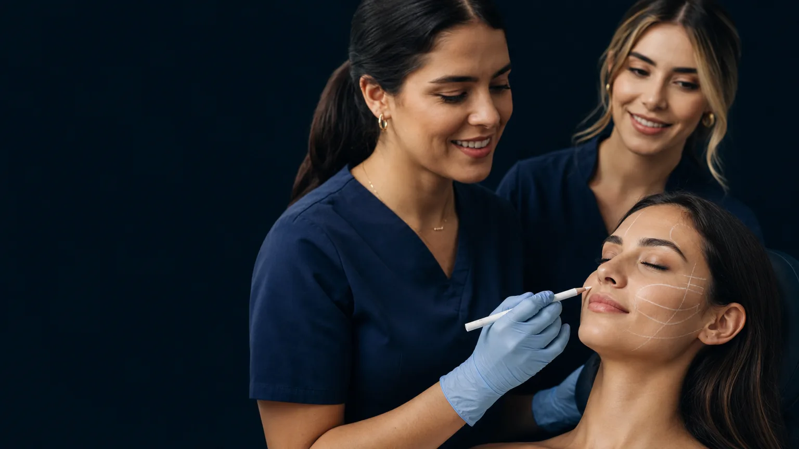
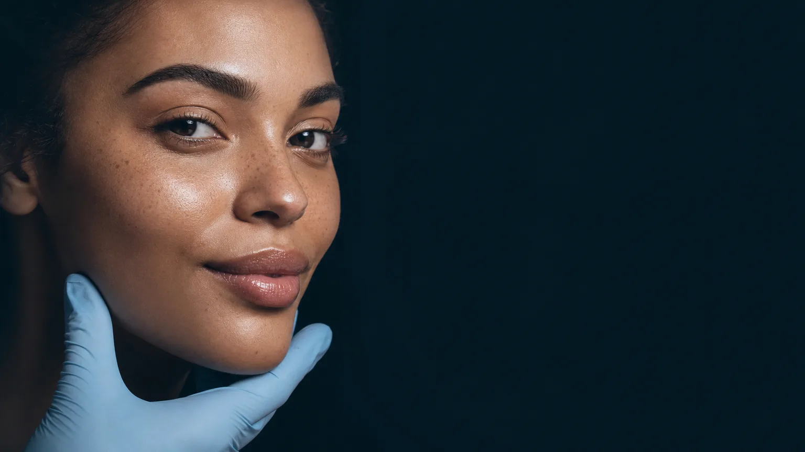
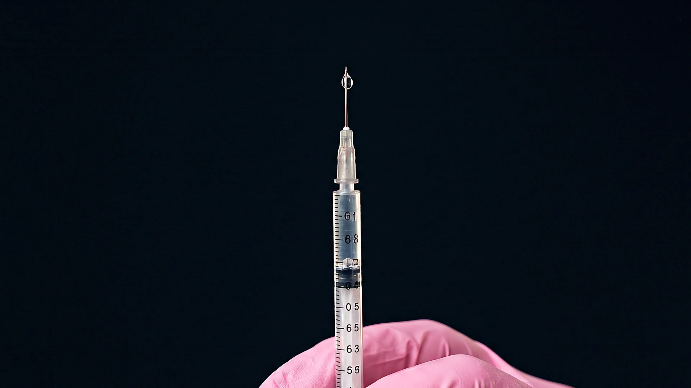

A precisão transforma.
O conhecimento também.
O próximo nível da sua carreira começa aqui.
Conheça a nossa formaçãoEspecialize-se em Estética com Aulas 100% Presenciais, Próximo de Você
Conheça a UniPHDEstética é sobre
pessoas.
É sobre olhar para cada rosto, compreender suas particularidades e cuidar com conhecimento. Na UniPHD, a formação em estética conecta essa sensibilidade à capacitação profissional.
Pós-graduação, aperfeiçoamentos e imersões presenciais em Guanambi para estudantes e profissionais da saúde.

Mais de 70%
de aulas práticas.
Na pós-graduação, mais de 70% da carga horária é prática. Você aprende com orientação presencial e desenvolve habilidades para atuar com conhecimento em estética.
- ConhecimentoFundamentos para compreender cada técnica.
- PráticaAprendizagem presencial com professores especializados.
- AperfeiçoamentoContinuidade na sua formação profissional.

Estética
Avançada.
Pós-graduação reconhecida pelo MEC. Mais de 70% de carga horária prática.
Uma formação 100% presencial em Guanambi, com mais de 70% de carga horária prática para aprofundar sua atuação em estética.
Converse com a secretaria para conhecer os requisitos de ingresso e as próximas turmas.
Explore a grade da formação +
- Anatomia e fisiologia aplicada à estética
- Semiologia e avaliação
- Cosmetologia e farmacologia
- Terapia capilar e tricologia
- Intradermoterapia corporal, facial e capilar
- Pré e pós-operatório de cirurgias
- Toxina botulínica
- Preenchedores e fios de PDO
- Empreendedorismo e marketing
- Eletroterapia e tecnologias avançadas
- Procedimentos minimamente invasivos
- Peelings químicos, mecânicos e enzimáticos
Grade apresentada no site institucional. Confirme a programação vigente com a secretaria.
Uma formação pensada para você.
Da primeira aula à sua especialização: conhecimento, prática e acompanhamento em Guanambi.
Conheça os cursos e as próximas turmasAprendizado
Material didático incluso.
Suporte contínuo durante todo o curso.
Mais de 70% de prática.
Mais de 70% da carga horária é prática, preparando você para o mercado desde o início.
Aulas 100% presenciais.
Aprendizado presencial e contato direto com pacientes-modelo.
Didática leve e humanizada.
Didática leve, objetiva e humanizada, com ambiente e equipe acolhedora.
Acompanhamento próximo.
Acompanhamento e suporte durante toda a formação.
Tecnologias atualizadas.
Aulas com tecnologias atuais para acompanhar os recursos e as práticas da estética.
Pessoas
Vagas limitadas.
Turmas com vagas limitadas, porque acreditamos em qualidade, não em quantidade.
Mulheres que brilham.
Turmas formadas por mulheres que brilham na estética e na vida.
Mestres e doutores.
Corpo docente formado por mestres e doutores experientes na área.
Perto de você
Perto de você.
Especialização sem precisar se deslocar para outras regiões.
Guanambi e cidades vizinhas.
Localização estratégica, próxima de você e de quem vem das cidades vizinhas.
Formação e condições
Carga horária alinhada aos conselhos.
Carga horária que atende às exigências dos principais conselhos de classe: COREN, CREFITO, CRF e CRB.
Até 14x no boleto.
Pagamento facilitado, com desconto para pagamento em dia.
Pós-graduação reconhecida pelo MEC.
Certificação válida em todo o território nacional.
Qual técnica faz parte
do seu próximo passo?
Aperfeiçoamentos e imersões apresentados pela UniPHD. Consulte a secretaria sobre disponibilidade, requisitos e próximas turmas.
Acessar o portal de cursosVeja o que nossos alunos falam da gente.

Depoimento indisponível no momento.

Depoimento indisponível no momento.

Depoimento indisponível no momento.

Depoimento indisponível no momento.

Depoimento indisponível no momento.

Depoimento indisponível no momento.

Depoimento indisponível no momento.

Depoimento indisponível no momento.
Conhecimento
com propósito.
A UniPHD Cursos é uma instituição de educação profissional em Guanambi, Bahia, dedicada à pós-graduação, ao aperfeiçoamento e às capacitações nas áreas da saúde e estética avançada.
Nosso propósito é apoiar o desenvolvimento profissional com conhecimento especializado e vivência prática.
Converse com a nossa equipe
Vamos falar
do seu futuro?
Escolha seu curso e faça a matrícula no nosso portal online . Se preferir orientação, deixe seus dados para conversar com a secretaria.
Prefiro conversar pelo WhatsAppSeus dados, com cuidado.
Nome, e-mail, WhatsApp e curso de interesse são enviados à secretaria da UniPHD para responder à sua solicitação. O formulário utiliza o serviço FormSubmit para encaminhar a mensagem. Para solicitar correção ou exclusão dos dados, escreva para secretaria@uniphd.com.br.